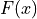
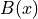
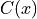
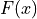
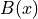
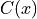
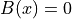

Source
Source


IlluminationCorrection¶
The module provides a function to correct systematic illumination variations and vignetting in intensity.
The intensity image  given a flat field  and
a background  the image is corrected to  as:
given a flat field  and
a background  the image is corrected to  as:
The module also has functionality to create flat field corections from measured
intensity changes in a single direction, useful e.g. for lightsheet images,
see e.g. flatfield_from_regression().
References
..[LSM] Fundamentals of Light Microscopy and Electronic Imaging, p. 421
-
correct_illumination(source, flatfield=None, background=None, scaling=None, dtype=None, verbose=False)[source]¶ Correct illumination and background.
Arguments
- sourcearray, str, or Source
The image to correct for illumination.
- sinkarray, str, Source, or None
The sink to write results to.
- flatfieldstr, array, Source or None
The flatfield estimate. If None, no flat field correction is done.
- backgroundstr, array, Source or None
The background estimate. If None, backgorund is assumed to be zero.
- scalingfloat, ‘max’, ‘mean’ or None
Scale the corrected result by this factor. If ‘max’ or ‘mean’ scale the result to match the ‘max’ or ‘mean’. If None, dont scale the result.
- processesint or None
Number of processes to use. If None use macimal available.
- verbosebool
If true, print progrss infomration.
Returns
- correctedarray
Illumination corrected image.
Note
The intensity image
given a flat field and
a background image is corrected to as:If the background is not given .
The correction is done slice by slice assuming the data was collected with a light sheet microscope.
The image is finally optionally scaled.
References
[1] Fundamentals of Light Microscopy and Electronic Imaging, p 421
See also
default_flatfield_line_file_name
-
flatfield_from_line(line, shape, axis=0, dtype=<class 'float'>)[source]¶ Creates a 2d flat field image from a 1d line of estimated intensities.
Arguments
- linearray
Array of intensities along the specified axis.
- shapetuple
Shape of the resulting image.
- axisint
Axis of the flat field line estimate.
Returns
- flatfieldarray
Full 2d flat field.
-
flatfield_line_from_regression(source, sink=None, positions=None, method='polynomial', reverse=None, return_function=False, verbose=False)[source]¶ Create flat field line fit from a list of positions and intensities.
Arguments
- sourcestr, array or Source
Intensities as (n,)-vector or (n,m)-array of m intensity measurements at n points along an axis.
- sinkstr, array, Source or None
Sink for the result.
- positionsarray, ‘source’ or None
The positions of the soource points. If None, a linear increasing positions with equal spaccing is assumed. If ‘source’ take positions from first line of the source array.
- method‘Gaussian’ or ‘Polynomial’
function type for the fit.
- reversebool
Reverse the line fit after fitting.
- return_functionbool
If True, also return the fitted function.
- verbose :bool
Print and plot information for the fit.
Returns
- fitarray
Fitted intensities on points.
- fit_functionfunction
Fitted function.
Note
The fit is either to be assumed to be a ‘Gaussian’:
or follows a order 6 radial ‘Polynomial’
-
default_flat_field_line_file_name= '/home/ckirst/Programs/ClearMap2/ClearMap/Resources/Microscope/lightsheet_flatfield_correction.csv'¶ Default file of points along the illumination changing line for the flat field correction
- See Also: